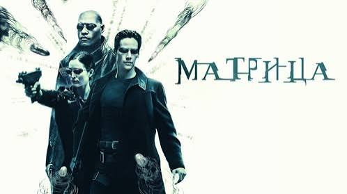
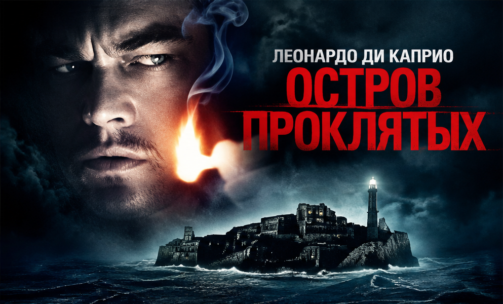

Интерстеллар
2014 · Фантастика, драма · ★ 8.7
В будущем Земля становится всё менее пригодной для жизни. Группа исследователей отправляется через космическую червоточину, чтобы найти человечеству новый дом.
Подробнее →Познакомься с фильмами CineScope: узнай их жанры, годы выпуска и о чём рассказывает каждая история.
2014 · Фантастика, драма · ★ 8.7
В будущем Земля становится всё менее пригодной для жизни. Группа исследователей отправляется через космическую червоточину, чтобы найти человечеству новый дом.
Подробнее →
2010 · Фантастика, триллер · ★ 8.8
Специалист по проникновению в чужие сны получает необычное задание: не украсть идею, а внедрить её в сознание человека. Для этого ему предстоит пройти через несколько уровней сна.
Подробнее →
1994 · Драма · ★ 9.3
Банкир Энди Дюфрейн оказывается в тюрьме по обвинению в убийстве. Несмотря на тяжёлые обстоятельства, он не теряет надежды и постепенно меняет жизнь окружающих.
Подробнее →
1999 · Фантастика, боевик · ★ 8.7
Программист Нео узнаёт, что привычный мир может быть искусственной реальностью. Встреча с загадочными повстанцами заставляет его по-новому взглянуть на человечество.
Подробнее →1993 · Приключения, фантастика · ★ 8.2
На удалённом острове учёные создают парк с живыми динозаврами. Но технический сбой превращает увлекательную экскурсию в опасную борьбу за выживание.
Подробнее →
2010 · Триллер, детектив · ★ 8.2
Два федеральных маршала прибывают в психиатрическую лечебницу на острове, чтобы расследовать исчезновение пациентки. Постепенно расследование становится всё более загадочным.
Подробнее →